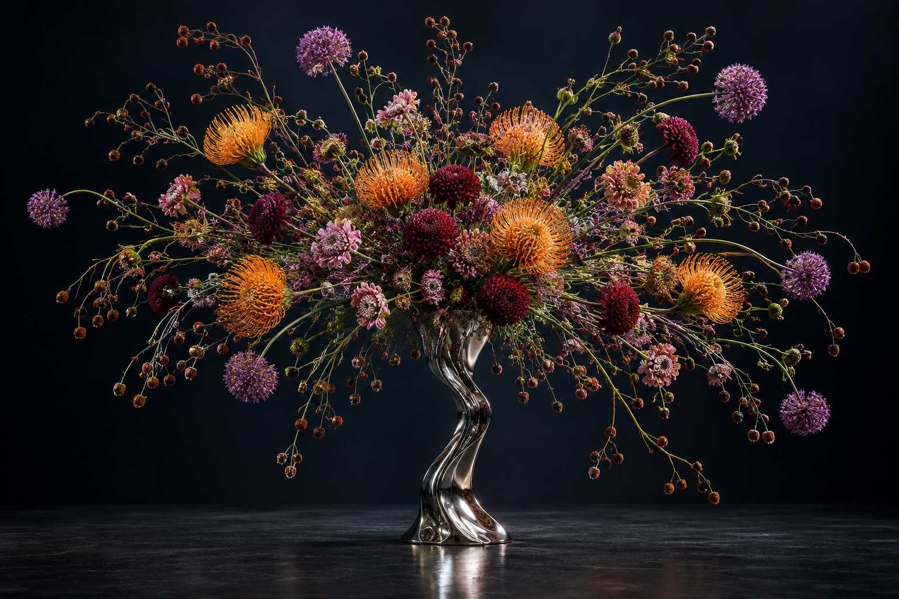
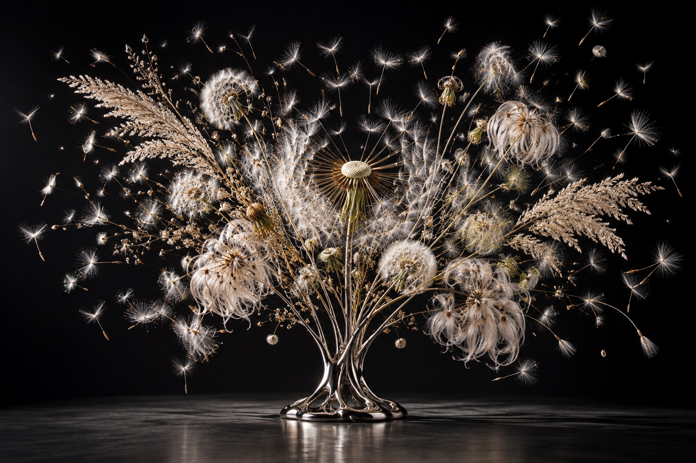

花儿要爆炸啦
Flowers at Criticality
关于盛放、过剩与合成生命
一朵花，
能够承受多少生命，
才会开始爆炸？
花被赠送、修剪、安置在恰当的容器里，承担爱意与纪念。但盛放也包含失控的倾向：花瓣向外翻卷，颜色挤占视野，原本紧闭的结构逐渐无法容纳自身。
我们将这种倾向推向极端。八件虚拟花艺雕塑分别停留在积压、裂变、喷射、扩散与耗散的时刻。金属维持秩序，植物持续向它的边界施压。
生成式视觉使这场事件可以反复发生。当现实的花通过凋谢完成时间，合成的花却拥有无数次盛放。能够重新生成，是否意味着从未真正失去？
盛放的八种失控
从积蓄，到离开，到一次没有终点的重演。
点击作品，进入单件档案。
盛放，
是生命把自己
花出去的方式。
把一朵花，推向临界。
拖动时间，让花聚合、盛放、离散。
或者停在它即将失去形状的那一刻。
以代码绘制的形态实验。每一次回到起点，都将消失的花重新交还给观看者。
美，在形状
失效的时候。
花是入口。真正被展出的，是容器、边界、时间，以及一个完整的生命如何超过自身。
I临界花态 THE THRESHOLD
闭合时，事件还没有发生；散落时，事件已经结束。我们将花停在两者之间：结构仍然成立，却已经显露无法继续成立的迹象。观看被悬在一个延长的“即将发生”里。
一切都还完整，一切都已经开始破裂。
II无用的丰盛 EXPENDITURE
颜色过于浓烈，花瓣过于密集，结构过于繁复。作品将丰盛推向难以维持的程度，让生命把积蓄投入一次短暂、奢侈且无法回收的显现。美因这种支出而有了代价。
生命最耀眼的时刻，也可能是它耗尽自己的时刻。
III离心的生命 BECOMING
爆炸前，我们看见一朵花；爆炸后，我们看见距离、轨迹与碎片之间的关系。当中心空掉，个体的边界向外延伸。解体让生命获得了更多去处，完整也就不再是唯一的存在方式。
它失去形状，也获得空间。
IV无籍植物 POST-NATURE
牡丹的层叠、兰花的结构、红掌的表面和种子的离散方式可以在同一株植物上相遇。我们能够辨认局部，却无法命名整体。它拥有生长的暗示，却没有可以返回的原生地。
当分类失效，未知开始开花。
V合成永生 THE POLITICS OF TIME
生成可以撤回损伤，恢复枯萎，抹去季节。每一次完美的重演，都可能消除生命经历过的痕迹。最后那朵过分洁净的花获得永久的美，却失去了时间能够触碰它的地方。
一朵不会凋谢的花，如何证明自己曾经活过？
从一朵花，到一场事件。
把植物形态拆成结构，把结构推向失控。
每一步都回应同一个问题：美能够维持多久？
提取植物的方向
层叠、放射、卷曲、离散。不同花材提供不同的空间动词。
建立不可能的花态
将物种结构重新组合，保留真实纹理，让形态越过分类。
让中心失去控制
推开花瓣，拉长花茎，留下空心。爆炸成为可见的空间关系。
把时间折成循环
让一次不可逆的盛放反复发生，观察重演如何改变失去的意义。
生成使形态成立。
爆炸使形态超过自身。
潜在扩散研究展示了在压缩表征中合成图像的方式；视频生成研究进一步引入时间维度。本项目借此提出一种生命想象：植物的边界、花瓣的数量与盛放的时长，都成为可以重新协商的条件。
这一对应是艺术隐喻。系列作品图以生成工具制作，交互实验以程序绘制；页面呈现的是虚拟形态研究。
